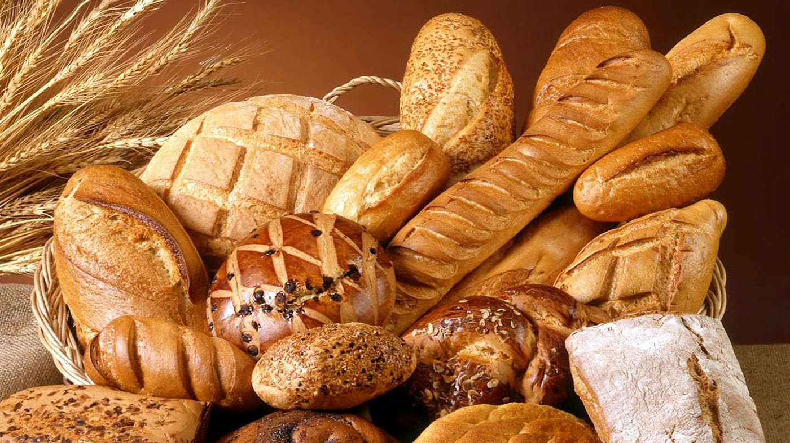
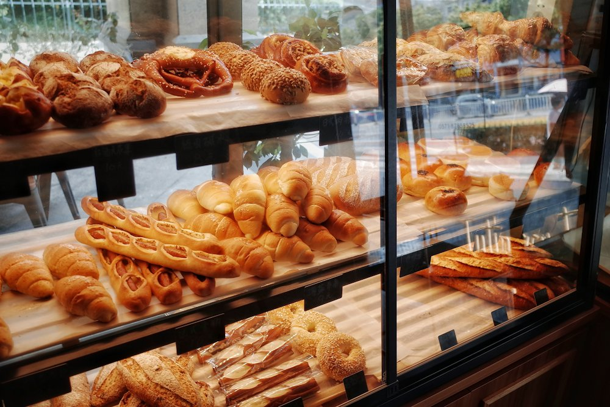

Du pain chaud dès 7 heures, rue de Concarneau.
Pains, viennoiseries, pâtisseries et sandwichs faits maison, du lundi au samedi. Un salon de thé pour prendre le temps.
Deux amis réunis par une passion : le goût du fait maison.Romain et Adrien, les nouveaux boulangers
Romain et Adrien ont repris le Fournil de Trégunc en septembre. Même adresse, des fournées tout au long de la journée, et l'envie de faire découvrir leurs recettes.
Dans la boutique
Boulangerie
Baguettes, pains de campagne et pains spéciaux, cuits sur place.
Viennoiseries
Croissants, pains au chocolat et brioches pour le petit-déjeuner.
Pâtisserie et chocolaterie
Gâteaux, entremets et chocolats, pour le goûter ou les fêtes.
Sandwicherie et traiteur
Sandwichs du midi et préparations traiteur à emporter.
Et aussi Salon de théBoissons à emporterConfiserieÉpicerie

Venir au fournil
7h - 19hDu lundi au samedi. Fermé le dimanche.
71 b rue de Concarneau
29910 Trégunc
29910 Trégunc